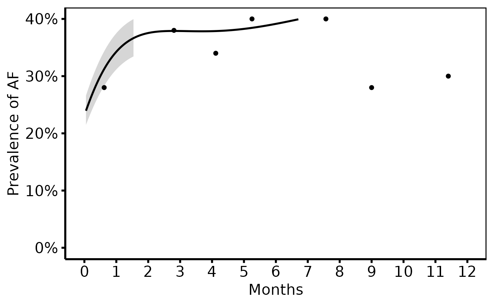

Prepare nonparametric temporal trend curve data for plotting
Source:R/nonparametric-curve-plot.R
hv_nonparametric.RdValidates pre-computed curve data (and optional CI bounds and binned data
summary points) and returns an hv_nonparametric object. Call
plot.hv_nonparametric to obtain a bare ggplot2
curve plot that you can decorate with colour/fill scales, axis limits, and
hv_theme.
Usage
hv_nonparametric(
curve_data,
x_col = "time",
estimate_col = "estimate",
lower_col = NULL,
upper_col = NULL,
group_col = NULL,
data_points = NULL
)Arguments
- curve_data
Data frame; one row per (time, group) combination.
- x_col
Name of the x-axis column. Default
"time".- estimate_col
Name of the predicted value column. Default
"estimate".- lower_col
Name of the lower CI bound column, or
NULL. DefaultNULL.- upper_col
Name of the upper CI bound column, or
NULL. DefaultNULL.- group_col
Name of the stratification column, or
NULL. DefaultNULL.- data_points
Optional data frame of binned data summary points. Must have columns matching
x_coland"value", plusgroup_colwhen stratified. DefaultNULL.
Value
An object of class c("hv_nonparametric", "hv_data"); call
plot() on the result to render the figure — see
plot.hv_nonparametric. The list contains:
$dataThe
curve_datadata frame.$metaNamed list:
x_col,estimate_col,lower_col,upper_col,group_col,has_ci,has_data_points,n_obs.$tablesList; contains
data_pointswhen supplied.
Details
Covers the full range of tp.np.* SAS templates:
| SAS template pattern | R usage |
Single average curve (avrg_curv, u.trend) | hv_nonparametric(dat) |
| Curve + 68\ Curve + CI + data points | + data_points = ... |
Two-group comparison (double, ozak) | + group_col = "group" |
Multi-scenario / covariate-adjusted (mult) | + group_col = "group" |
Phase decomposition (phases, independence) | + group_col = "phase" |
SAS column mapping:
estimate_col←prev,mnprev,_p_,est_fev,est_z0dlower_col←cll_p68orcll_p95upper_col←clu_p68orclu_p95group_col← indicator added after wide-to-long reshape
See also
plot.hv_nonparametric to render as a ggplot2 figure,
hv_theme for the publication theme,
sample_nonparametric_curve_data for example data.
Other Nonparametric curves:
plot.hv_nonparametric()
Examples
dat <- sample_nonparametric_curve_data(n = 500, time_max = 12)
dat_pts <- sample_nonparametric_curve_points(n = 500, time_max = 12)
# 1. Build data object
np <- hv_nonparametric(dat, lower_col = "lower", upper_col = "upper",
data_points = dat_pts)
np # prints CI / data-point flags
#> <hv_nonparametric>
#> N curve pts : 500
#> x / estimate: time / estimate
#> CI ribbon : lower / upper
#> Data points : yes
# 2. Bare plot -- undecorated ggplot returned by plot.hv_nonparametric
p <- plot(np)
# 3. Decorate: colour/fill palettes, axis scales, labels, theme
p +
ggplot2::scale_colour_manual(values = c("steelblue"), guide = "none") +
ggplot2::scale_fill_manual(values = c("steelblue"), guide = "none") +
ggplot2::scale_x_continuous(limits = c(0, 12), breaks = 0:12) +
ggplot2::scale_y_continuous(limits = c(0, 0.40),
breaks = seq(0, 0.40, 0.10),
labels = scales::percent) +
ggplot2::labs(x = "Months", y = "Prevalence of AF") +
hv_theme("poster")
#> Warning: Removed 187 rows containing missing values or values outside the scale range
#> (`geom_ribbon()`).
#> Warning: Removed 53 rows containing missing values or values outside the scale range
#> (`geom_line()`).
#> Warning: Removed 3 rows containing missing values or values outside the scale range
#> (`geom_point()`).

# --- Global theme (set once per session) ----------------------------------
if (FALSE) { # \dontrun{
old <- ggplot2::theme_set(hv_theme_manuscript())
plot(np) +
ggplot2::scale_colour_manual(values = c("steelblue"), guide = "none") +
ggplot2::scale_fill_manual(values = c("steelblue"), guide = "none") +
ggplot2::labs(x = "Months", y = "Prevalence of AF")
# For multi-group curves swap scale_colour_manual with:
# ggplot2::scale_colour_brewer(palette = "Set1", name = NULL)
# ggplot2::scale_fill_brewer(palette = "Set1", guide = "none")
ggplot2::theme_set(old)
} # }
# See vignette("plot-decorators", package = "hvtiPlotR") for theming,
# colour scales, annotation labels, and saving plots.